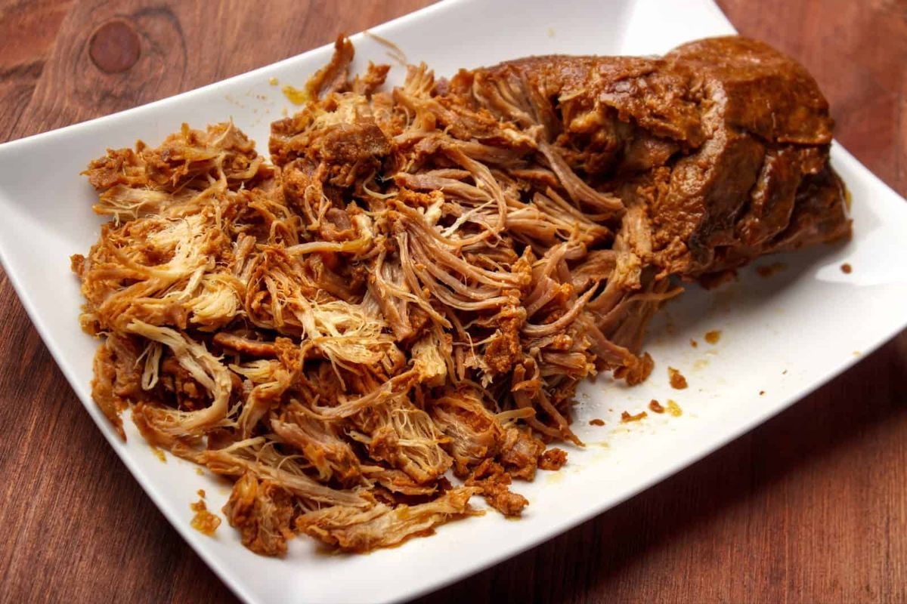

Slow Cooker Dump BBQ Pulled Pork Sandwiches

- Meal
- Dinner
- Serves
- 8 per source; made as written for the household of 6 (leftovers)
- Protein
- pork shoulder
- Cook
- slow cooker · 5 min active · low 8–10 h or high 5–6 h · easiest
- Make-ahead / leftovers
- dump in the morning / yes
- Mediterranean
- no
- WW tier
- moderate
- Status
- Trying out (probation)
Ingredients
Exactly as the source (×1, serves 8). Easiest for 6 = full batch with one whole bottle of sauce; a 3-lb roast (low end of the source's range) is plenty for 6.
- 3–4 pounds pork shoulder roast (also called pork butt)
- 1 bottle (18 ounces) BBQ sauce (your favorite brand)
- ½ cup apple cider vinegar
- ¼ cup brown sugar
- 1 medium onion, roughly chopped
To serve
- Hamburger buns — source gives no count; ~12 buns (estimate, 2 packs of 8 covers seconds)
- Coleslaw (optional, source suggestion)
Method
- Place pork shoulder in the slow cooker, trimming excess fat if desired.
- Add chopped onion around the pork.
- In a bowl, mix together BBQ sauce, apple cider vinegar, and brown sugar, then pour over the pork.
- Cover and cook on low for 8–10 hours or on high for 5–6 hours, until pork is super tender and falls apart easily.
- Remove pork and shred with two forks. Return to the slow cooker and stir into the sauce. Serve on hamburger buns with coleslaw, or as desired.
Notes
- Yield: source says 8 servings; nutrition not given.
- a fish-free plate / hidden fish: no fish, but many BBQ sauces contain Worcestershire (anchovy). Read the BBQ sauce label and pick one without anchovy/Worcestershire.
- Timing: low 8–10 h means starting by ~8–10 AM for a 6 PM dinner.
Source: Stroller Envy, "Slow Cooker Dump BBQ Pulled Pork" (WPRM recipe 44814), Natasha Starn: https://stroller-envy.com/30-slow-cooker-dump-dinners-5-ingredients-or-less/#wprm-recipe-container-44814